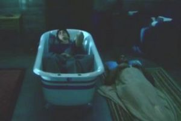

Kyle XY
 De: La Frikipedia, la enciclopedia extremadamente seria.
De: La Frikipedia, la enciclopedia extremadamente seria.
También conocido como "el niño que no tenía ombligo". Aparece en medio del bosque desnudo y asusta a las serpientes. La policía lo arresta y como es tan raro, una chica superidealdelamuerte lo acoge en su casa. El chico tiene superpoderes y al principio creemos que es un Maiquel Yordan, Bil Gueits, David Meca y Tamariz.
Aparte de esto, a Kyle lo persiguen unos malos malísimos pero es ayudado por un chico que antes era malo, ahora bueno y ahora parece que vuelve a ser malo: Tom Foss. Además, ahora hay otro sujeto: XX. No, no ha salido de una peli porno: es un sujeto hembra, se llama Jessy y también tiene superpoderes.
Personajes
Amanda será to lo virgen que quiera pero es un poquito buscona
- Kyle XY: El tío bueno de la serie. Es perfectamente perfecto. Le gusta comerse las gominolas en un tazón con leche y puede predecir el futuro. Ah! Se me olvida decir que duerme en una bañera. La verdad es que es un poco rarito el chico.
- Nicole Trager: La psicóloga de Kyle que pasa a ser su madre. Es muy moderna y muy pro. Siempre se preocupa por todo y yo aún no me explico como resuelve los problemas con sus hijitos adolescentes en plena edad del pavo sin ningún percance en un chas.
- Stephen Trager: El padre buenorro que va de bueno y tampoco tiene nunca malos rollos con sus hijos adolescentes (y mucho menos con su mujer). Es que son la familia perfecta.
- Josh Trager: El hijo pequeño. Va de macarrilla y siempre quiere ligar con tías buenas que miden medio metro más que él.
- Lori Trager: La hija mayor. Por su cabeza sólo pasa una cosa: "Declan". Es una adolescente histérica compulsiva, que entre ella y su amiga ya hacen dos.
- Declan McDunaugh: El novio de Lori. Sólo quiere tirársela y descubrir cosas sobre Kyle. Pasa de ella como de la mierda, mientras ella no para de agobiarlo. Le falta el canto un duro para enrollarse con Jessy XX.
- Amanda Bloom: La vecinita virgen y recatada. Kyle está loquito por ella no sabemos si por su parecido con la Virgen María o para ocultar su homosexualidad.
 Kail en su confortable cama
- Charlie Tanner: La más guarra del año según la lista del instituto. Le pone los cuernos a Amanda con medio pueblo. Se enteran todos menos ella. Está amenazado por Superkyle.
- Hilary: La amiga más perra y más golfa de Lori, que se dejó la virginidad por el camino y que se tiró a Charlie. Otra adolescente histérica compulsiva que solo viste un tanga. Y además rubia.
- Tom Foss: El poli malo, el poli bueno. Siempre va con llamaditas ocultas y cuando lo hace le sale a Kyle una T gigante en el móvil supongo que de Tarugo.
- Adam Baylin: Es el papá de Kyle que tiene un supercerebro y crea un útero artificial para crear superhéroes intelectuales. Al final muere.
Incógnitas
Aunque parezca mentira es Josh ligando
- ¿Por qué los peluqueros le han hecho ese pelo a Kyle?
- ¿Seguirá siendo Amanda virgen?
- ¿Qué pretende realmente Tarugo Foss?
- ¿Se enterarán alguna vez de todo los Trager?
- ¿Por qué Kyle tiene tantas habilidades pero no tiene ni puta idea de ligar?
- ¿Ligará alguna vez Josh? ¿Y Kyle?
- ¿Se olvidará por fin Lori de Declan y nos dejará tranquilos de una puta vez?
- ¿Cuántos porros se habrán fumado los guionistas para inventarse todo esto?
- respues a la pregutna anterior: se rumorea que furon los mismo guionistas que john doe, por lo cual se supone que mas de 50 kylos (notese el chiste) de porros
Próximos acontecimientos
Se rumorea que The Undertaker está un poco celoso de Kyle porque ve que le está quitando puestos en la escala de audiencia y le ha retado a un uno contra uno en el cuadrilátero del Pressing Catch.
-Parece ser que al final tanto Josh como Kyle ligan y se lian con una chica llamada Andromeda(esto es cierto) y con Amanda respectivbamente lo que se desconoce es si al final montaran una orgia los cuatro¡¡ cuatro¡¡ cuatro¡¡(asi lo decian los locutores en pressing catch)y si se pegaran alguna ETS yo apuesto por que todos pillen algo que decidan los espectadores con sms.
Autor(es):
- Krusher
- Nexo
- Khazike Khashondo
- El Sevillano
- Move Zig
- Kalimotxa
- DRAGONAZUL
- -richi-
- Cibercrank
- Veni Vidi Vici
Frikipedia 2005-2016, Licencia
GFDL 1.2 - Extraído por FrikiLeaks